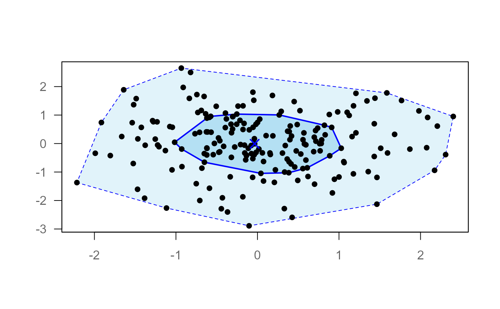
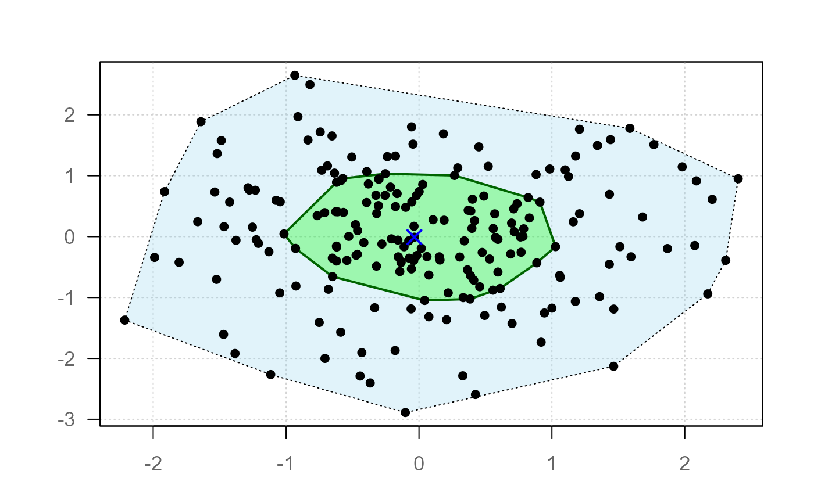
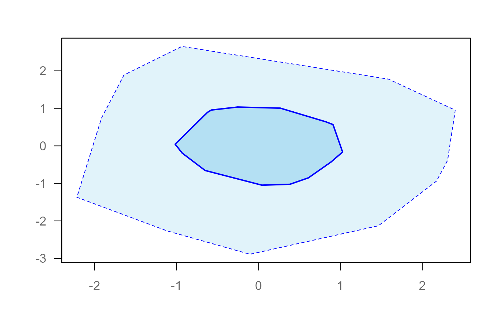
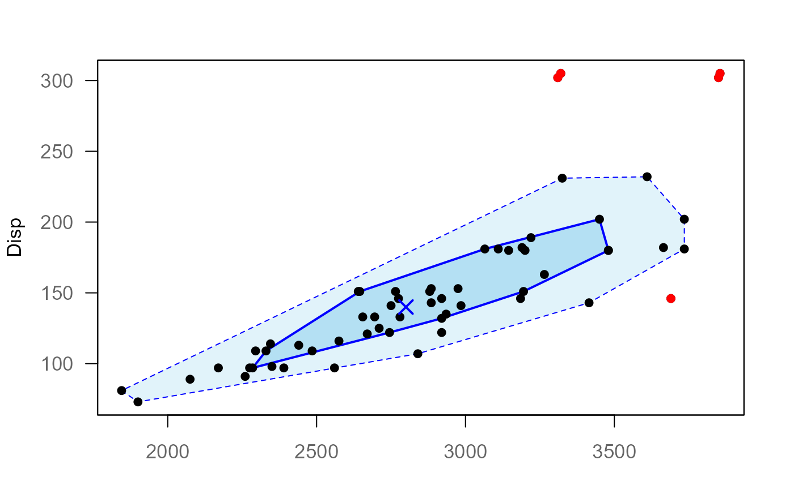
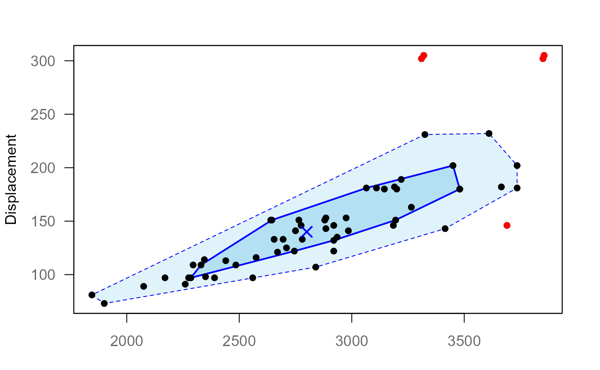

Draws a bagplot (bivariate boxplot) based on halfspace (Tukey) depth.
The bag contains the innermost 50\
hull of all non-outlying points, and points outside the fence (the bag
inflated by factor, not drawn) are flagged as outliers.
Usage
plotBag(x, ...)
# S3 method for class 'formula'
plotBag(
x,
data = NULL,
subset,
na.action = na.omit,
main = "",
xlab = NULL,
ylab = NULL,
...
)
# Default S3 method
plotBag(
x,
main = "",
xlab = "",
ylab = "",
xlim = NULL,
ylim = NULL,
factor = 3,
eps = 0.00000001,
dither = TRUE,
points = TRUE,
bag = TRUE,
loop = TRUE,
fence = FALSE,
out = TRUE,
median = TRUE,
grid = FALSE,
box = TRUE,
stamp = NULL,
...
)Arguments
- x
a numeric matrix or data frame with exactly two columns, or a formula of the form
y ~ x(see the formula method).- ...
additional graphical parameters passed to
par().- data
an optional data frame containing the variables in
formula.- subset
an optional expression indicating which observations to use.
- na.action
a function specifying how missing values are handled. Defaults to
na.omit, as the depth computation requires complete pairs.- main, xlab, ylab
character strings for plot annotations. The formula method derives
xlabandylabfrom the variable names if they are not supplied.- xlim, ylim
numeric vectors of length 2 specifying axis limits.
- factor
inflation factor for the fence (default: 3).
- eps
numeric tolerance used in depth computation and geometry.
- dither
logical, whether to add small noise to break ties.
- points, bag, loop, fence, out, median, grid, box
object-oriented control of plot elements (see Details).
- stamp
optional stamp passed to
.withGraphicsState().- formula
a formula of the form
y ~ x, where both variables are numeric.xis drawn on the horizontal,yon the vertical axis.
Value
Invisibly returns a list of class "bagplot" with
components:
center- Tukey median.depth- depth of the innermost region bounding the bag.bag- bag polygon (matrix).fence- fence polygon (matrix, not drawn by default).loop- loop polygon (matrix).outliers- outlier points (matrix).depths- halfspace depth of all observations.
Details
All graphical elements are controlled via an object-oriented interface:
each element can be specified as TRUE, FALSE, or a
list(...) of graphical parameters. Internally, this is handled
via bedrock::callIf().
The construction follows Rousseeuw, Ruts and Tukey (1999):
The halfspace (Tukey) depth of every observation is computed using a direct port of the original Fortran routine
TUKDEPTH(Rousseeuw & Ruts, 1996).The Tukey median is approximated by the mean of all observations with maximal depth.
The bag is obtained by radial interpolation between the convex hulls of two adjacent depth regions, calibrated such that it contains \(\lfloor n/2 \rfloor\) observations (up to ties on the polygon boundary).
The fence is the bag inflated by
factorrelative to the Tukey median. Following the original proposal it is used for classification only and not drawn by default.Observations outside the fence are flagged as outliers.
The loop is the convex hull of all non-outlying observations, so it always lies within the data range.
Two approximations remain relative to the strict theory: the Tukey
median is not computed via HALFMED, and the bag interpolates
hulls of sample depth regions rather than exact isodepth contours.
Borderline outlier classifications may therefore differ slightly from
other implementations (e.g. aplpack).
Exact ties and collinear configurations violate the general-position
assumption of the depth algorithm; dither (default TRUE)
adds negligible noise (order eps) to break them.
Element Control
Each of the following arguments accepts:
TRUE- draw element with defaultsFALSE- suppress elementlist(...)- customize graphical parameters
Supported elements (in drawing order):
grid- background gridfence- classification boundary (defaultFALSE)loop- convex hull of the non-outlying pointsbag- central 50\points- raw data pointsout- outliersmedian- Tukey medianbox- plot frame
References
P. J. Rousseeuw, I. Ruts, J. W. Tukey (1999): The bagplot: a bivariate boxplot, The American Statistician, vol. 53, no. 4, 382–387.
P. J. Rousseeuw, I. Ruts (1996): Algorithm AS 307: Bivariate location depth, Applied Statistics, vol. 45, no. 4, 516–526.
See also
Other plot.bivariate:
plotAssoc(),
plotCor(),
plotDens2D(),
plotHeatmap(),
plotHexbin(),
plotMosaic(),
plotXY()
Examples
set.seed(1)
x <- cbind(rnorm(200), rnorm(200))
# data of Rousseeuw et al. (1999): car weight vs engine displacement
cardata <- data.frame(
Weight = c(2560, 2345, 1845, 2260, 2440,
2285, 2275, 2350, 2295, 1900, 2390, 2075, 2330, 3320, 2885,
3310, 2695, 2170, 2710, 2775, 2840, 2485, 2670, 2640, 2655,
3065, 2750, 2920, 2780, 2745, 3110, 2920, 2645, 2575, 2935,
2920, 2985, 3265, 2880, 2975, 3450, 3145, 3190, 3610, 2885,
3480, 3200, 2765, 3220, 3480, 3325, 3855, 3850, 3195, 3735,
3665, 3735, 3415, 3185, 3690),
Disp = c(97, 114, 81, 91, 113, 97, 97,
98, 109, 73, 97, 89, 109, 305, 153, 302, 133, 97, 125, 146,
107, 109, 121, 151, 133, 181, 141, 132, 133, 122, 181, 146,
151, 116, 135, 122, 141, 163, 151, 153, 202, 180, 182, 232,
143, 180, 180, 151, 189, 180, 231, 305, 302, 151, 202, 182,
181, 143, 146, 146)
)
plotBag(x)

# Custom styling
plotBag(x,
bag = list(col = adjustcolor("green", 0.3), border = "darkgreen"),
loop = list(border = "black", lty = 3),
out = list(col = "red", pch = 17),
grid = TRUE
)

# Minimal plot
plotBag(x, points = FALSE, median = FALSE)

# formula interface
plotBag(Disp ~ Weight, data = cardata)

# example of Rousseeuw et al. (1999): car weight vs engine displacement
plotBag(cardata, xlab = "Weight", ylab = "Displacement")
